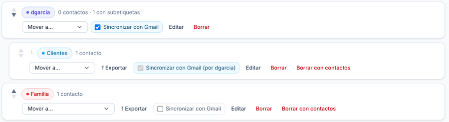
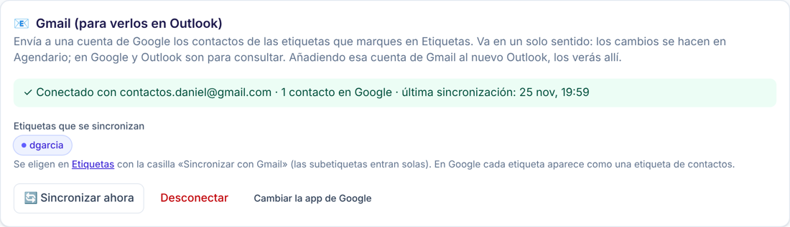

10Novedades de la versión 1.3
La 1.3 trae la sincronización de contactos con una cuenta de Gmail (para tenerlos en el nuevo Outlook, que no admite CardDAV), la ventana de Novedades en el menú y varias correcciones.
Novedades en el menú
- En el menú (web) y en «Más» (app), justo antes de Salir, está 📋 Novedades con el número de tu versión.
- Abre el historial de cambios de todas las versiones, con la tuya marcada. Va dentro de Agendario: se ve también sin conexión.
Contactos en Gmail (y en Outlook)
Agendario puede enviar a una cuenta de Google los contactos de las etiquetas que elijas. Añadiendo esa cuenta al nuevo Outlook, los verás allí. Funciona así:
- Va en un solo sentido: Agendario → Google. Los cambios se hacen en Agendario; en Google y en Outlook los contactos son para consultar (lo que se cambie allí se pisa en la siguiente sincronización).
- Eliges las etiquetas en Etiquetas con la casilla «Sincronizar con Gmail». Las subetiquetas entran solas.
- De cada contacto van su nombre, apodo, empresa y cargo, cumpleaños, notas, foto y los teléfonos, correos, webs y direcciones de esas etiquetas y los que no tienen etiqueta (la misma regla que con Fastmail).
- En Google, cada etiqueta aparece como una etiqueta de contactos con el mismo nombre («dgarcia › Clientes» para las subetiquetas).
- Si quitas la marca de una etiqueta, la etiqueta a un contacto o borras el contacto, se borra de Google. Solo se tocan los contactos que creó Agendario, nunca los que ya tenía la cuenta.
- Se sincroniza cada 15 minutos y, además, un minuto después de cada cambio. En Ajustes → Sincronización → Gmail está «Sincronizar ahora».
💡 Usa una cuenta de Gmail normal (no de Google Workspace) si la de Workspace va a desaparecer. Puede ser una cuenta solo para esto.
Paso 1 · Preparar la app de Google (una vez, lo hace el administrador)
Google exige una «app» propia para dar permiso sobre los contactos. Se crea gratis en Google Cloud; si ya tienes la de las copias en Google Drive, usa ese mismo proyecto.
- Entra en console.cloud.google.com con tu cuenta y elige el proyecto de Agendario (arriba a la izquierda).
- APIs y servicios → Biblioteca, busca People API y pulsa Habilitar.
- Google Auth Platform → Público: tipo de usuario Externo y estado de publicación En producción (botón «Publicar app»). Importante: si se queda «En pruebas», Google retira el permiso cada 7 días y la sincronización se para.
- Google Auth Platform → Clientes → Crear cliente:
- Tipo de aplicación: Aplicación web. Nombre: «Agendario Gmail».
- En URIs de redirección autorizados añade la dirección de tu Agendario seguida de
/api/gmail/callback, por ejemplo https://agendario.tudominio.es/api/gmail/callback. Agendario te la muestra ya escrita en Ajustes.
- Pulsa Crear y copia el ID de cliente y el secreto de cliente.
- En Agendario: Ajustes → Sincronización → Gmail, pega el ID y el secreto y pulsa Guardar. Se guardan solo en tu servidor.
⚠️ La dirección tiene que ser https y exactamente la que usas para abrir Agendario en el navegador (la del Proxy Host de Nginx Proxy Manager). Si no coincide, Google dice «redirect_uri_mismatch».
Paso 2 · Conectar tu cuenta de Gmail
- Desde la web de Agendario (no desde la app): Ajustes → Sincronización → Gmail → Conectar cuenta de Google.
- Elige la cuenta de Gmail. Saldrá «Google no ha verificado esta app»: es normal, la app es tuya. Pulsa Configuración avanzada → Ir a … (no seguro).
- Marca el permiso de contactos y pulsa Continuar. Vuelves a Agendario con «Gmail conectado».
Cada usuario de Agendario conecta su propia cuenta y elige sus etiquetas.
Paso 3 · Elegir las etiquetas
- Menú → Etiquetas. En cada etiqueta hay una casilla «Sincronizar con Gmail».
- Al marcarla, sus contactos se envían enseguida. Sus subetiquetas aparecen marcadas «por» la madre.
- En Ajustes → Sincronización → Gmail ves la cuenta conectada, cuántos contactos hay en Google, cuándo fue la última sincronización y qué cambió.
- Desconectar pregunta si quieres borrar también de Google los contactos y etiquetas que creó Agendario o dejarlos allí.

La casilla «Sincronizar con Gmail» en Etiquetas (la subetiqueta entra por su madre).

Ajustes → Sincronización → Gmail, ya conectado.
Paso 4 · Verlos en el nuevo Outlook
- En el nuevo Outlook: Agregar cuenta y entra con esa cuenta de Gmail.
- Personas → Configuración: en «Mostrar solo estos contactos» deja marcada solo la cuenta de Gmail (si no quieres ver los de otras cuentas).
- En el Calendario, desmarca el de esa cuenta si no lo usas. Su bandeja de correo puedes contraerla.